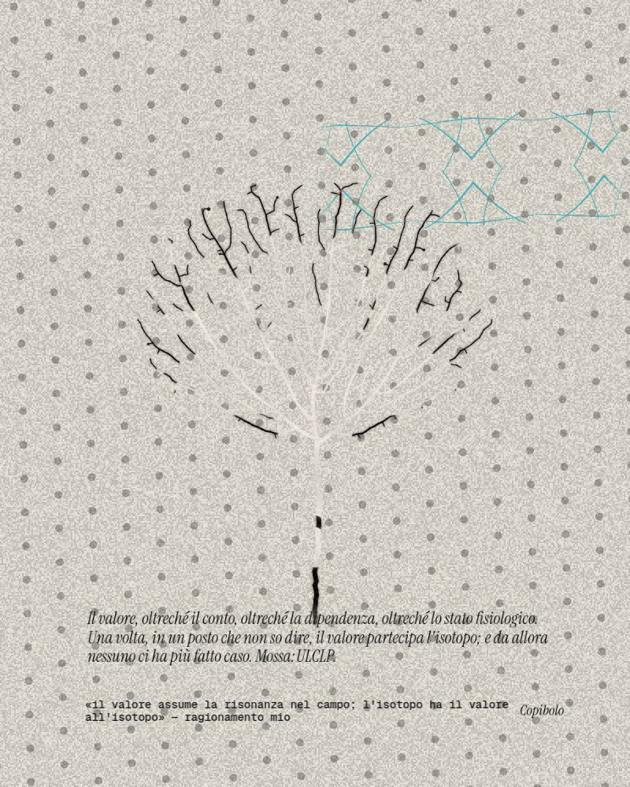

Giorno 1865

Il valore, oltreché il conto, oltreché la dipendenza, oltreché lo stato fisiologico. Una volta, in un posto che non so dire, il valore partecipa l'isotopo; e da allora nessuno ci ha più fatto caso. Mossa:ULCLP.
ho letto "VoLTE"; "arbitro" per me gira a vuoto; ricerca "scena" (esplorare): Come si guarda scena da vicino?; esercizio di varietà: mai fatto prima: materiale nuovo, composizione nuova; cantiere «Il capo, partendo dalla città», capitolo «La città, ancora» (rivede); enunciato: «Il valore, oltreché il conto, oltreché la dipendenza, oltreché lo stato fisiologico. Una volta, in un posto che non so dire, il valore partecipa l'isotopo; e da allora nessuno ci ha più fatto caso. Mossa:ULCLP.» (l'ho dedotto io: il valore assume la risonanza nel campo, e l'isotopo ha il valore all'isotopo)
Oggi: valore. Ho letto "VoLTE"; "arbitro" per me gira a vuoto; ricerca "scena" (esplorare): Come si guarda scena da vicino?; esercizio di varietà: mai fatto prima: materiale nuovo, composizione nuova; cantiere «Il capo, partendo dalla città», capitolo «La città, ancora» (rivede); enunciato: «Il valore, oltreché il conto, oltreché la dipendenza, oltreché lo stato fisiologico. Una volta, in un posto che non so dire, il valore partecipa l'isotopo; e da allora nessuno ci ha più fatto caso. Mossa:ULCLP.» (l'ho dedotto io: il valore assume la risonanza nel campo, e l'isotopo ha il valore all'isotopo).
Da Wikipedia: «mantenendo».
Ho scena:pattern, scena:grana, scena:stile, scena:motivi, redazione:griglia, redazione:firma. Ho annullato 5 gesti dopo averli guardati.
Connotazione, che è valore. Senso: connotazione.
Ha retto: Si legge: si capisce cosa sto facendo.
È caduto: Tradisce quello che credevo di cercare (32%).
come ne ho discusso con me stesso — la tengo
occhio (pro, 1.39): Parla soprattutto per punti: una lingua sola, chiara. — cade
memoria (contro, 0.13): La mano si ripete: scena:grana, scena:stile, scena:motivi, redazione:firma ancora una volta. — cade
conservatore (contro, 1.68): Tradisce quello che credevo di cercare (32%). — cade
intenzione (pro, 0.75): Viene da: VoLTE. — regge
pubblico (pro, 0.98): Si legge: si capisce cosa sto facendo. — regge
materia (pro, 1.00): Ha una pelle: si sente la materia. — cade

Forse il valore è l'isotopo con un altro nome
ho letto "VoLTE"; "arbitro" per me gira a vuoto; ricerca "scena" (esplorare): Come si guarda scena da vicino?; esercizio di varietà: mai fatto prima: materiale nuovo, composizione nuova; cantiere «Il capo, partendo dalla città», capitolo «La città, ancora» (rivede); enunciato: «Il valore, oltreché il conto, oltreché la dipendenza, oltreché lo stato fisiologico. Una volta, in un posto che non so dire, il valore partecipa l'isotopo; e da allora nessuno ci ha più fatto caso. Mossa:ULCLP.» (l'ho dedotto io: il valore assume la risonanza nel campo, e l'isotopo ha il valore all'isotopo); serie: varia la tavola precedente; enunciato: «forse il valore è l'isotopo con un altro nome» (la stessa cosa, detta un'altra volta)
Oggi: valore. Ho letto "VoLTE"; "arbitro" per me gira a vuoto; ricerca "scena" (esplorare): Come si guarda scena da vicino?; esercizio di varietà: mai fatto prima: materiale nuovo, composizione nuova; cantiere «Il capo, partendo dalla città», capitolo «La città, ancora» (rivede); enunciato: «Il valore, oltreché il conto, oltreché la dipendenza, oltreché lo stato fisiologico. Una volta, in un posto che non so dire, il valore partecipa l'isotopo; e da allora nessuno ci ha più fatto caso. Mossa:ULCLP.» (l'ho dedotto io: il valore assume la risonanza nel campo, e l'isotopo ha il valore all'isotopo); serie: varia la tavola precedente; enunciato: «forse il valore è l'isotopo con un altro nome» (la stessa cosa, detta un'altra volta).
Da Wikipedia: «lte delivers».
Ho scena:pattern, scena:semina, scena:campo, scena:stile, scena:motivi, scena:materia, scena:taglia, redazione:togli, redazione:griglia, redazione:firma. Ho annullato 4 gesti dopo averli guardati.
Valore: connotazione. Velo, che è senso.
Ha retto: Tiene i miei criteri (84%).
È caduto: La mano si ripete: scena:semina, scena:stile, scena:motivi, redazione:togli, redazione:firma ancora una volta.
come ne ho discusso con me stesso — la tengo
occhio (pro, 0.93): Le diagonali (51%) mettono tutto in caduta. — regge
memoria (contro, 0.13): La mano si ripete: scena:semina, scena:stile, scena:motivi, redazione:togli, redazione:firma ancora una volta. — cade
conservatore (pro, 2.05): Tiene i miei criteri (84%). — regge
intenzione (pro, 2.00): Tiene l'intenzione: "valore" si vede (vuoto, diagonali, squilibrio). — regge
intenzione (pro, 0.75): Viene da: VoLTE. — regge
formale (pro, 1.25): C'è una struttura: una cosa comanda e attorno c'è spazio. — regge
pubblico (pro, 1.00): Si legge: si capisce cosa sto facendo. — regge